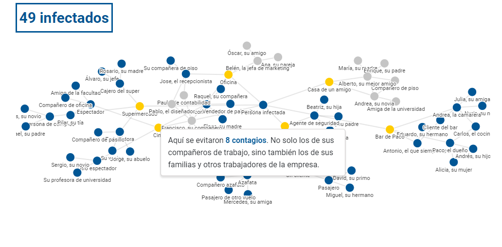
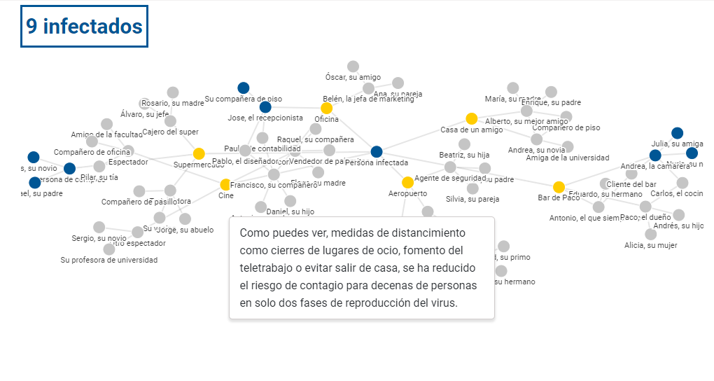

Práctica 2. Visualización de datos
El gráfico elegido para analizar pertenece a eldiario.es y representa el distanciamiento social. Se trata de un gráfico de marzo de 2020 en el que se explica de manera muy realista y detallada cómo se propaga el virus, y hace hincapié en la importancia de la distancia social, algo muy importante para cortar la propagación del covid.

Para ello, en el gráfico se establece una persona afectada, que podría ser cualquiera de nosotros, y mediante nodos se desarrolla su vida personal y profesional, y cómo las personas que interactúan con el individuo.
Mediante nombres ficticios, pero relaciones que bien pueden asemejarse a la realidad individual, se muestra cómo el virus se puede propagar de una persona a otra al no cumplir el distanciamiento social y cómo, al no tener cuidado, cada núcleo se ve afectado por el descuido de una persona.
La persona infectada, el paciente cero de este gráfico, está representado por el color azul. A todos los sitios a los que acude se representa con un color amarillo, para generar esa diferencia clara entre persona y lugar. Y el resto de personas que se ven afectadas están representadas con un círculo de color gris.
Desde el primer momento se establece la cantidad máxima de infectados, en caso de que el paciente cero haya ido a todos estos sitios sin saber que tiene el virus (que en este ejemplo son 63), pero a medida que se hace scroll hacia abajo se van reduciendo a medida que se crean escenarios que impiden que se propague el virus, como que no se llega a encontrar con un amigo o que su empresa de trabajo endurece las medidas de prevención, evitando así los contagios.
El gráfico se mantiene fijo en el fondo, lo único que va cambiando es el cuadro de texto, que va explicando la situación, se resalta el caso al que se está aludiendo, y el cuadro superior izquierdo con el número de afectados en cada ocasión que, como se dijo anteriormente, va decreciendo según las medidas que se van tomando.
El uso de los colores me parece el adecuado, aunque sí que haría una corrección. Las personas infectadas están todas representadas por el color gris, pero en este grupo se pueden diferenciar dos subgrupos: los que tienen contacto directo con el paciente cero, y aquellos que son amigos o familiares de este primer grupo. Por ello, yo los diferenciaría con el color rojo, por ejemplo a los contactos estrechos con el paciente cero.
En cuanto al código, este gráfico está insertado desde la página de Flourish, y cuenta con todas las variantes del gráfico, es decir, que cada vez que el gráfico cambia forma una ‘slide’, y estas están todas enlazadas al código de la página de eldiario.es. De esta manera, y mediante una función que involucra el scroll, cada ‘slide’ se irá viendo a medida que se hace scroll hacia abajo.
A este gráfico se le acompaña más abajo un pequeño texto para complementar lo explicado mediante el gráfico. Y, además, más abajo muestra el mismo gráfico pero mostrando la clara diferencia entre cómo se expande el virus si se cumplen las medidas del distanciamiento social y cuando no. Esto se puede ver gracias a dos botones que habilitan cada versión, así se nota la diferencia de una manera más rápida.